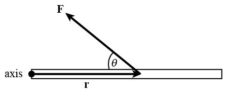

Torques and Static Equilibrium
Introduction
Archimedes, Greek mathematician, physicist, engineer, inventor and astronomer, was widely regarded as the leading scientist of the ancient world. He made a study of torques and how forces can turn objects. His studies led him to claim, "Give me a lever long enough and a fulcrum on which to place it, and I shall move the world."

Figure 1
τ = Fr.
In this situation, the distance r is called the moment arm of the force. The direction of the torque can be specified as the direction it would rotate the object about the axis if no other torques were present. In the figure, the torque due to F is counterclockwise. In all applications we will consider, torques are either clockwise or counterclockwise. The direction of torques can be specified by selecting one of these two directions to be positive and then letting each torque be positive or negative. If we select the clockwise direction of rotation to be positive, then the torque due to F in the figure would be negative. If we select the counterclockwise direction of rotation to be positive, then the torque due to F in the figure would be positive.
An object is in static equilibrium when it is at rest and continues to remain at rest. This means that both its linear and rotational (angular) accelerations are zero. Then, from the translational and rotational forms of Newton's second law,
In this experiment we will suspend masses at two points along a meterstick and measure the location of one of the masses for which the meterstick is balanced when pivoted about a specificed point. Analysis of the data will allow you to calculate the mass of the meterstick.
Objective
To use the torque equation for static equilibrium to measure the mass of a meterstick.Apparatus
- Meterstick
- Metallic stand
- Slider (to place on the meterstick and use to balance it on the stand)
- Two sliding hooks (to place on the meterstick and from which to suspend the masses)
- Slotted mass set and 2 mass hangers
- Balance
Procedure
Please print the worksheet for this lab. You will need this sheet to record your data.
Examine the Apparatus
The center of gravity of the meterstick is the point where all the weight of the meterstick can be taken to act in a force diagram. If the meterstick is pivoted at its center of gravity and torques are taken about an axis at the pivot, both the normal force exerted by the pivot and the weight of the meterstick have zero moment arms and therefore zero torques and the meterstick will not rotate.1
Carry out the following procedure to determine the x-coordinate of the center of gravity of the meterstick. Place the slider on the meterstick and place the meterstick on the metal stand with the slider at the pivot. Adjust the position of the slider until the meterstick balances on the pivot. The slider then is at the center of gravity of the meterstick. Record the x-coordinate, xcg, of the center of gravity of the meterstick.
2
What value would you expect for xcg if the meterstick has a uniform distribution of mass along its length? Is your result close to that value?
Note:
It is difficult to actually balance the meterstick on the pivot. The balance point can be determined by adjusting the position of the slider such that the meterstick tips over to one side, then moving the slider slightly until the meterstick tips toward the other side. By repeating this procedure you can determine to within 1 or 2 mm the position of the slider for which the meterstick would ideally balance.
It is difficult to actually balance the meterstick on the pivot. The balance point can be determined by adjusting the position of the slider such that the meterstick tips over to one side, then moving the slider slightly until the meterstick tips toward the other side. By repeating this procedure you can determine to within 1 or 2 mm the position of the slider for which the meterstick would ideally balance.
3
Use the balance to measure the mass, mhook, of one of the sliding hooks. (They should each have the same mass.) Record your result.
Static Equilibrium for Different Torques
1
Attach one of the sliding hooks to the meterstick at the position x1 = 5.0 cm
and suspend a mass of m1 = 300 g
from that hook.
Note:
m1 is the sum of the mass of the hanger and the total mass of the slotted masses that are placed on the hanger.
m1 is the sum of the mass of the hanger and the total mass of the slotted masses that are placed on the hanger.
2
Place the slider at xP = 25.0 cm
and place the meterstick on the stand with the slider at the pivot.
3
Place the second sliding hook on the meterstick at coordinate x somewhere to the right of the pivot, on the opposite side from m1. Suspend total mass m2 = 50 g
from this hook (total mass is mass of the hanger and of the slotted masses placed on the hanger).
4
Carefully find the value of x for which the meterstick is balanced. (You may need to move the slider back and forth about the point where the meterstick tips to the left or to the right, as was done when you found the center of gravity of the meterstick.) Record x in the table on your worksheet.
5
Repeat for the other values of m2 that are listed in the table on your worksheet and record the value of x in each case.
Graphical Analysis of Your Data
The free-body force diagram for the balanced meterstick with the two weights suspended from it is shown below.![A horizontal meterstick with slider and pivot each located a distance x_P from the left end. Four arrows point downward from the meterstick. In order from left to right, the arrows have the following labels and distances measured from the left end of the meterstick: (m_1 + m_(hook))*g with distance x_1, m_S*g with distance x_P, M*g with distance x_(cg), and (m_2 + m_(hook))*g with distance x. A single arrow points upward a distance x_P from the left end of the meterstick with label n. The distance between the first downward arrow and pivot is x_P - x_1. The distance between the third downward arrow and the pivot is x_(cg) - x_P. The distance between the fourth downward arrow and the pivot is x - x_P.](images/figure5-2.png)
Figure 2
m2 + mhook
are entries from one row of your data table, n is the normal force exerted on the meterstick by the pivot, and mS is the mass of the slider. We don't know n or mS but we will see that they won't enter into our analysis. g is the acceleration due to gravity, but it won't enter into our analysis either.
The other quantities in the force diagram have known values.
-
•x1 = 5.0 cm
-
•xP = 25.0 cm
-
•m1 = 300.0 g
-
•mhook has the value you found in step 3 of Examine the Apparatus.
-
•xcg has the value you found in step 1 of Examine the Apparatus.
τP = 0.
For each entry in your data table, all quantities in the equation have known values except for the mass, M, of the meterstick.
We could put a value of m2 + mhook
and the corresponding measured value of x into the equation and solve for M, but our result will be more accurate if we use all our data by graphing it. Also, if the graph has the shape the equation says it should have then this is a check on our analysis.
1
In Eq. (3), set τP = 0
and solve the equation for x. Call your result Eq. (4).
2
Use Excel and your data in Table 1 of the worksheet to plot x (vertical axis) versus | 1 |
| m2 + mhook |
3
Your Eq. (4) should show that the graph is theoretically a straight line. Be sure you understand why this is so. If your plotted points don't fall close to a straight line, you probably have done something wrong, either with taking and recording data or constructing the graph. Use Excel to find the slope and vertical intercept of the straight line that represents your data.
4
According to your Eq. (4) and the known quantities in the experiment, what should the numerical value of the vertical intercept (the point where the line crosses the vertical axis) be? Record this expected value, in cm.
If the vertical intercept for your graph is not in good agreement with this expected value, you have made a mistake with taking and recording data or in constructing the graph. Correct what you are doing before proceeding. Ask the TA for help if you and your lab partner can't find what is wrong.
5
Record the slope (in units of cm · g) of the straight line in your Excel graph.
6
Use your Eq. (4) to relate the slope of the straight line in your Excel plot to the mass, M, of the meterstick. Use the value of the slope from your graph and the known experimental quantities to solve for M and record your result.